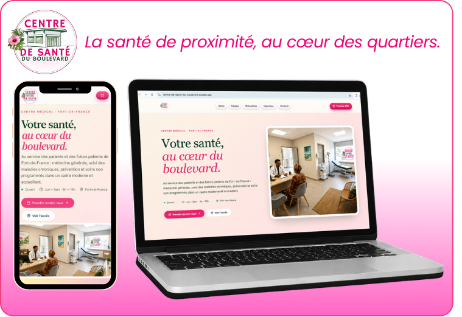

Architecture Interactive de la Coordination
Explorez l'architecture d'exercice coordonné du Centre de Santé du Boulevard. Découvrez les ressources internes de Niveau 1 (équipe salariée), le réseau conventionné de Niveau 2 (cliniciens, IPA externes et pharmacien partenaire), et les structures d'accès aux droits et de prévention de Niveau 3.

Stratification & Triage : Les Niveaux de Risque Patient (1 à 4)
Visualisez et triez la patientèle du QPV selon les niveaux d'urgence du Projet de Santé.

Urgence Vitale / Critique
Décompensation aiguë, détresse respiratoire, arrêt, suspicion d'AVC ou d'IDM immédiat.

Vitale Potentielle / Instabilité
Constantes anormales (Tension > 180 mmHg, SpO2 < 92%), plaie diabétique infectée, détresse modérée.

Chronique Complexe & Sociale
Patient ALD (Diabète/HTA) en retard de suivi, rupture de droits sociaux actifs, isolement du senior.

Prévention, Dépistage & ETP
Vaccination à jour, bilan d'âge clé (MBP), dépistages organisés du cancer, reconditionnement physique.
Niveau 1 — Ressources Internes (Équipe Salariée & Gouvernance Initiale)
Niveau 2 — Ressources Externes (Réseau Clinique & Paramédical Conventionné)
Niveau 3A — Hub Social (Droits)
Niveau 3B — Hub Prévention
Sélectionnez un acteur
Simulateur Opérationnel de Parcours Patients
Visualisez comment l'exercice coordonné résout concrètement les ruptures de soins d'un patient du QPV.
Accueil & Triage (Niveau 1)
Sélectionnez un scénario ci-dessus.
Prise en Charge (Niveau 1)
-
Relais Clinique (Niveau 2)
-
Hub Social & Prév (Niveau 3)
-